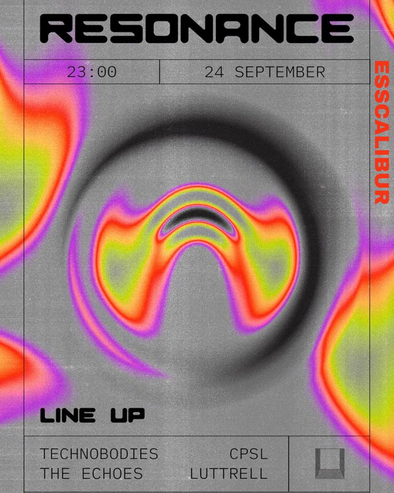

Pourquoi les afterworks sont devenus incontournables
Entre les cours, les révisions et les projets de groupe, la vie étudiante peut être particulièrement intense. Les afterworks sont devenus une tradition incontournable pour décompresser en fin de journée tout en développant son réseau professionnel et amical. Bordeaux, avec sa dynamique vie étudiante et ses nombreux établissements, offre un terrain de jeu idéal pour ces moments de convivialité.
L'afterwork étudiant n'est pas qu'une simple sortie entre amis : c'est l'occasion de rencontrer des étudiants d'autres établissements, de partager ses expériences et parfois même de nouer des contacts professionnels dans une ambiance détendue. C'est tout l'art de combiner l'utile à l'agréable!
Notre top 7 des bars pour afterworks étudiants
Les afterworks organisés par les associations étudiantes
Au-delà des bars qui accueillent naturellement les étudiants, de nombreuses associations organisent leurs propres afterworks thématiques dans des lieux privatisés ou partenaires :
Les afterworks BDE
Les Bureaux Des Étudiants des différentes écoles de Bordeaux organisent régulièrement des afterworks pour leurs membres, souvent avec des tarifs négociés. Le BDE de Kedge Business School est particulièrement actif avec son "K'fé" mensuel qui réunit étudiants, anciens élèves et entreprises dans une ambiance décontractée.
Les afterworks réseau
Des associations comme "Bordeaux Entrepreneurs" ou "ESN Bordeaux" pour les étudiants internationaux proposent des événements de networking qui commencent généralement par un format afterwork avant de se transformer en soirées plus festives.
Les rendez-vous culturels
L'association "Culture Campus" organise des afterworks dans différents lieux culturels de la ville (CAPC, TnBA, Rocher de Palmer...) permettant aux étudiants de découvrir ces établissements dans un cadre privilégié et à tarif préférentiel.
Conseils pour profiter au maximum des afterworks
- Arrivez tôt pour profiter des happy hours et trouver facilement des places, surtout si vous êtes en groupe.
- Utilisez l'application BDB pour repérer les afterworks organisés par les associations étudiantes et recevoir des notifications des événements à venir.
- Variez les lieux pour découvrir différentes ambiances et élargir votre cercle de connaissances.
- Pensez aux transports : privilégiez les établissements accessibles en tramway pour votre retour, ou prévoyez une solution de covoiturage si l'afterwork risque de se prolonger.
- Restez informé : suivez les pages Instagram des établissements et des associations étudiantes qui annoncent souvent leurs événements et offres spéciales en dernière minute.
Conclusion
Les afterworks sont devenus une composante essentielle de la vie étudiante bordelaise, offrant une parenthèse conviviale dans des semaines parfois chargées. Au-delà de la simple détente, ces moments permettent de développer son réseau et de découvrir la ville sous un angle différent.
Bordeaux, avec sa vie étudiante dynamique et ses nombreux établissements, propose une offre variée adaptée à tous les goûts et tous les budgets. N'oubliez pas que ces lieux évoluent constamment : de nouveaux concepts apparaissent régulièrement et les formules peuvent changer.
Pour rester informé des nouveaux spots d'afterwork et des événements organisés par les associations étudiantes, téléchargez l'application BDB, votre compagnon idéal pour ne rien manquer de la vie étudiante bordelaise!